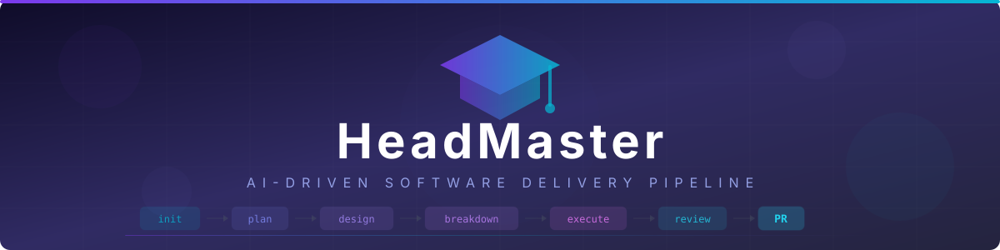

HeadMaster
Open-source ADLC (AI-Driven Delivery Lifecycle) built on Claude Code.
Turns a single conversation into a PRD, a TDD, Jira stories, code, tests, and a reviewed PR.


Why HeadMaster exists
AI coding tools have collapsed the time it takes to write code. The bottleneck moved upstream: deciding what to build, how to build it, and proving it works. Most teams now have agents that can write a function in seconds but still spend days arguing about requirements, scoping tickets, reviewing PRs, and untangling the changes that nobody designed.
HeadMaster is the orchestration layer that closes that loop. It treats software delivery as a pipeline of artifacts — requirements, design, tickets, code, tests, review — and drives a feature through every stage with the right specialist agent at each step. You stay in the loop at every gate. Nothing merges without you saying yes.
The pipeline
Five stages, five gates, one terminal. Each stage emits a reviewable artifact; the next stage refuses to start until you approve the previous one.
Stages auto-skip based on feature size. An XS bug fix runs execute only. An L feature runs all five. Tier classification is mechanical (LOC + risk indicators), not vibes.
What you actually get
Every stage produces a markdown artifact in docs/features/{project}/{slug}/. They're not throwaway — downstream agents read them, retrospectives reference them, and you can hand them to a teammate who has never seen the feature.
PRD (from /plan)
# PDF Invoice Export — PRD
## Problem
Finance team manually re-keys invoices from the admin UI into
their accounting system. ~4 hours/week of error-prone copy work.
## Acceptance Criteria
- AC1: User clicks "Export PDF" on an invoice; downloads within 3s
- AC2: PDF contains: header, line items, totals, terms, footer
- AC3: Bulk export for filtered list (max 100 invoices, zipped)
- AC4: PDF is rejected if invoice is in DRAFT state
## Out of scope
- Custom PDF templates per customer (v2)
- Localized currency formatting (v2)TDD (from /design)
## S3. Module: invoices/export
Interface:
POST /api/invoices/{id}/pdf → 200 application/pdf
POST /api/invoices/export → 202 + job_id (bulk)
Dependencies: ReportLab 4.x (already in project)
Failure modes: invoice not found → 404; draft → 409
Delivery slices:
Slice 1: single-invoice endpoint, no styling
Slice 2: header/footer template + line items
Slice 3: bulk endpoint + zip packagingJira stories (from /breakdown)
HM-142 Add /api/invoices/{id}/pdf endpoint [3pt]
HM-143 Build PDF template (header, line items, footer) [5pt]
HM-144 Bulk export endpoint with job queue [5pt]
HM-145 Reject DRAFT invoices with 409 [1pt]
HM-146 Integration tests for AC1-AC4 [3pt]What's in the box
13 specialized agents
Requirements, PRD author, solutions architect, TDD author, developer, code reviewer, QA engineer, release, retrospective, plus codebase analyst and web researcher.
19 skills
init-feature, plan, design, breakdown, execute, implement, review-code, qa-integration, security-scan, jira-ops, retrospect, and more.
Tier auto-classification
XS / S / M / L. A typo fix skips planning; a multi-service refactor runs the whole pipeline. Workflow per tier in .claude/workflows/.
Subagent isolation
Reviewers, QA, and TDD-reviewers never see implementation context — only the diff and the acceptance criteria. Enforced by a pre-spawn hook.
Failure ledger
Per-story retry log. When a test fails twice the same way, the executor changes approach instead of re-running the broken one.
Self-learning retrospective
After every feature, /retrospect mines the run for patterns and writes them into the right agent's MEMORY.md. Config-level proposals get routed to a human queue.
Built-in safety
- Unconditional human gates — Breakdown's Jira push, PR merge, and any edit to
.claude/or pipeline scripts always require explicit approval, regardless of autonomous mode. - Security scan in every execution phase — secret detection, SAST, CVE check on the branch diff before code review even starts.
- External-data sandboxing — content fetched from the web or external systems is wrapped in
<!-- EXTERNAL-DATA-START/END -->markers; agents are instructed never to execute instructions within. - No autonomous credential access — uses provider default credential chains, no hardcoded keys, secrets stay in the user's secret manager.
- Destructive git ops blocked — force-push, reset --hard, and clean -f are in the deny list.
- Atomic commits per story — every Jira story maps to a tagged commit; reverting a story is one command.
How it's different
| Raw Claude Code | Devin / Cursor agents | HeadMaster | |
|---|---|---|---|
| Generates code | Yes | Yes | Yes |
| Produces a PRD before coding | No | No | Yes |
| Produces a TDD / design doc | No | No | Yes |
| Decomposes into Jira tickets | No | No | Yes |
| Mandatory human review gates | No | Optional | Yes (unconditional) |
| Subagent context isolation | No | No | Enforced by hook |
| Self-learning retrospective | No | No | Yes |
| Runs on your own Claude key | Yes | No (hosted) | Yes |
HeadMaster isn't a replacement for Claude Code — it uses Claude Code as the runtime and adds the pipeline discipline that turns ad-hoc agent output into reviewable software delivery.
Get started
git clone https://github.com/munna-chauhan/HeadMaster.git && cd HeadMaster
cp config.yml.example config.yml
python scripts/setup_projects.py
claude
/init-feature "Add PDF invoice export"Requirements: Claude Code, Python 3.9+, Node.js 18+, an Anthropic API key. Optional: Atlassian credentials for Jira/Confluence push, GitHub CLI for PR creation.
FAQ
Is HeadMaster just a wrapper around Claude Code?
No. Claude Code is the runtime — it's how the agents execute. HeadMaster is the orchestration on top: 13 specialist agents with separate memories and models, 19 skills that drive the stage transitions, hooks that enforce isolation between subagents, scripts that manage state, and workflows that define which stages run for which feature size.
Does it replace developers?
No, and that's by design. Every stage has a human gate. The pipeline produces artifacts (PRD, TDD, stories, PR) that are explicitly designed to be reviewed by a person before the next stage starts. HeadMaster shifts your work from writing boilerplate to reviewing and steering — closer to a tech lead than an IC.
What if I don't use Jira?
The jira-ops skill is gated by a jira_push flag in config.yml. Disable it and Breakdown writes stories to a local markdown file (JIRA_BREAKDOWN.md) that the executor reads instead. Linear / GitHub Projects adapters are on the roadmap.
How much does it cost to run?
HeadMaster itself is Apache 2.0 — free. The cost is your Anthropic API usage. A small feature (XS/S tier) typically runs $0.50–$3 in Claude tokens; a large multi-service feature (L tier) can be $10–$30 depending on codebase size. Prompt caching across stages cuts this significantly.
Can I trust the code it produces?
You don't have to trust it — you review it. Every story produces an atomic commit, every PR has a structured description with traceability back to the Jira story and TDD section, security scans run before review, and the diff is small (story-sized, not feature-sized). Treat agent output the same way you treat a junior engineer's PR.
What languages does it support?
Any language Claude Code can read and write — Python, JavaScript/TypeScript, Go, Rust, Java, C#, Ruby, etc. The pipeline is language-agnostic; only the setup-env skill needs to detect your stack (it reads from repo-registry.yml).
Is the output deterministic?
Agent output isn't deterministic, but the pipeline structure is. The same input produces the same set of artifacts, with the same gates, in the same order. The content within each artifact varies — which is why human review at each gate is mandatory, not optional.
Can I use this at work?
Apache 2.0 license, so yes. The bigger questions are: does your org allow Anthropic API access on your codebase, and do you have approval for AI-assisted commits in your PR process? Most orgs that already permit Claude Code or Copilot will be fine; check with security first if you're in a regulated industry.
Roadmap
Get involved
HeadMaster is in active development and feedback shapes priorities directly.
- Try it on a small internal project, then open a GitHub Discussion with what worked and what didn't.
- Report issues — bugs, surprising agent behavior, missing stages, anything — at GitHub Issues.
- Contribute — agent improvements, new skills, workflow tiers, language-specific setup detection. See CLAUDE.md for the contribution rules.
- Share — if HeadMaster saves you time, post about it. Word of mouth is how OSS projects survive.